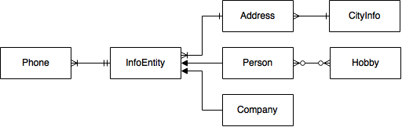

We startede by making the backend.
we choose to make the entities and thier relations from java.

Here you can see how our relations.
We made facades to InfonEntity, Phone and address. Then we made a main facade when we call the 3 other mapper facades.
When our Rest calls a metode in the main facade, the main facade then calls one of the 3 mapper facades. The mapper facade then get or makes the chance in the database and returns either a Person or a Company.
Here you can see a more specific who made what. But in general we helped each other.
Made the facade, overlooked error handling, stood for uploading the server to Digital Oacen.
Made some of the entities, Rest for company, Error handling and Documentation.
Made Rest for Person, Rest assured test and the frontend site.
Made some of the entities, Junit test and Documentation.